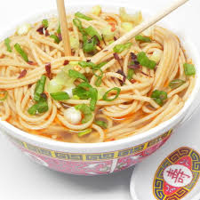

All-Natural Ramen

Description
This is a very simple recipe of some tasty ramen that only has all-natural ingredients and no MSG.
Ingredients
- 4 cups vegetable broth
- 4 cups water
- 1 tablespoon soy sauce
- 1 tablespoon sesame oil
- 1 tablespoon ground ginger
- 1 tablespoon Sriracha hot sauce
- 9 ounces soba noodles
Steps
- Combine broth, water, soy sauce, sesame oil, ginger, and hot sauce in a pot; bring to a boil.
- Add noodles to boiling broth mixture and cook until noodles are tender yet firm to the bite, 5 to 7 minutes.
- Transfer noodles to serving bowls and top with desired amount of broth.